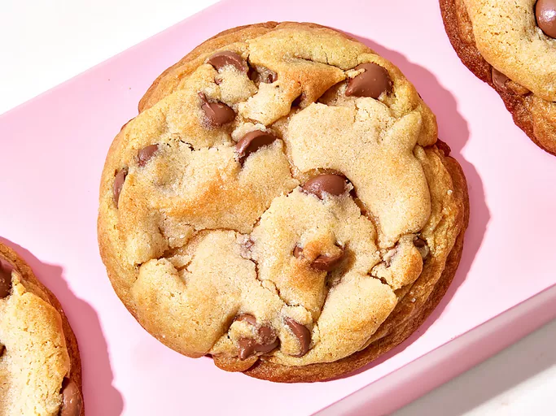

Chocolate Chip Cookies
Home

Description
If you don't know what a cookie is, you are either an archeologist or historian from after World War III, or you are an alien.
Ingredients
- 4 1/4 cups all-purpose flour
- 1 1/2 teaspoons baking soda
- 1 teaspoon baking powder
- 1 tablespoon cornstarch
- 2 teaspoons kosher salt
- 1 1/2 cups salted butter, softened
- 1 1/4 cups brown sugar
- 1 cup white sugar
- 2 large eggs, at room temperature
- 4 teaspoons vanilla extract
- 340 grams milk chocolate chips
Directions
- flour, baking soda, baking powder, cornstarch,
and kosher salt in a large bowl and whisk until
well incorporated; set aside.
- Add butter, brown sugar, and white sugar to a bowl.
Mix with an electric whisk on medium speed until light
and fluffy, about 3 minutes. Add in eggs one at a time,
until just combined. Add in vanilla; gradually add in
dry ingredients, mixing until just combined. Stir in chocolate chips.
- Using a 1/2 cup measure, scoop balls of dough into hands
and form into a loose ball. Place cookie dough balls on a
rimmed baking sheet and place in refrigerator for about 1
hour or until ready to bake. Alternatively, place in the freezer
for 25 to 30 minutes.
- Preheat the oven to 190 degrees celcius. Line baking sheets with parchment.
Working in batches of 3 or 4 cookies per baking sheet, carefully tear each
dough ball in half and place one half on top of the other with the broken,
jagged side up. Gently press the 2 halves together, taking care not to smooth
the top. Place cookies on the prepared baking sheet, leaving plenty of space between cookies.
- Bake in the preheated oven until golden around the edges and barely set in the middle,
10 to 12 minutes. Allow to cool completely on the baking sheet.
Home